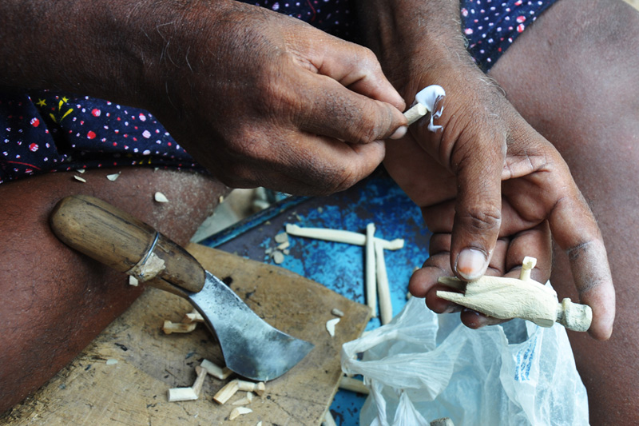
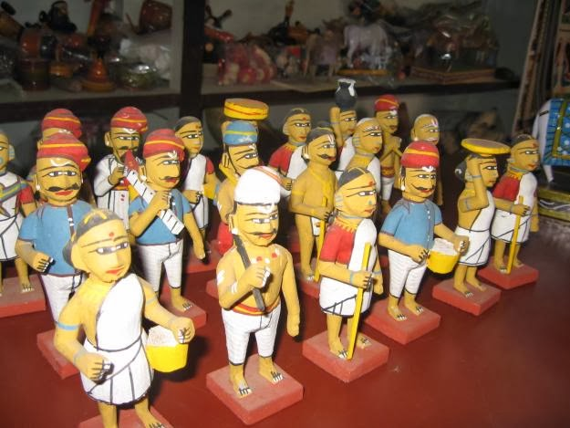

NTR District Government describes Kondapalli toy-making as a tradition approximately four centuries old.
01 / Kondapalli BommalluWood that
Wood that
remembers a place.
Kondapalli Bommallu are a centuries-old wooden craft tradition from Kondapalli near Vijayawada. Their figures carry mythology, occupations, animals, village life and festival memory in a visual language strongly associated with Andhra Pradesh.
The place
A craft close to the Capital Region.
Kondapalli lies near Vijayawada in NTR district. For QVibe, its proximity matters: it makes repeated visits, documentation and long-term understanding possible instead of treating the craft as something studied once from a distance.

Active artisans are identified in district material for the Kondapalli cluster.
How it is madeFrom wood
From wood
to bomma.
The hand remains visible through a sequence of shaping, joining, colour and storytelling.
Wood
The figure begins in light, workable wood suited to carving.
Shape
The basic form and individual details emerge through hand carving.
Join
Traditional process descriptions mention natural joining materials including tamarind-seed paste.
Colour
Paint transforms the carved form into a recognisable character.
Story
The finished object may represent mythology, animals, occupations, village life or festival scenes.


More than a children’s toy.
Kondapalli figures appear in cultural and festival settings as well as in play. Traditional subjects include gods, animals, occupational characters and scenes from everyday life. Collections can therefore operate as miniature records of how a community represents itself.
A bomma can carry a character, a story and a place — all inside a small wooden object.
Village life
Scenes of work, movement and everyday activity.
Animals & occupations
Recognisable figures that preserve local character.
Mythology & deities
Stories and figures drawn from religious and cultural memory.
Festival display
Bommala Koluvu traditions arrange figures into ceremonial displays.
Storytelling
Small figures can carry stories larger than the object itself.
Andhra identity
The craft has become a distinctive expression of place.
The story people tell.
One local tradition connects Kondapalli’s Arya Kshatriya artisan community with Muktharishi, a figure remembered in the craft’s oral history as having received artistic skill through Lord Shiva.
Whether read as history, belief or community memory, the story tells us something important: makers themselves understand the craft as part of an inherited identity, not merely an occupation.

Present reality
The craft already has institutional support.
₹89 LAKHDistrict material records ₹89 lakh of MPLAD support for the Kondapalli cluster. It also records a Common Facility Centre and toolkits distributed to 72 artisans. These are existing public-support initiatives for the cluster — not QVibe projects.